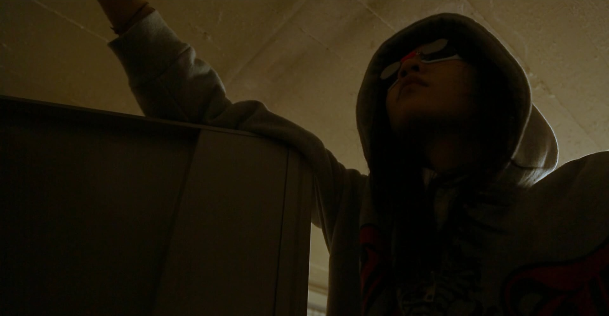
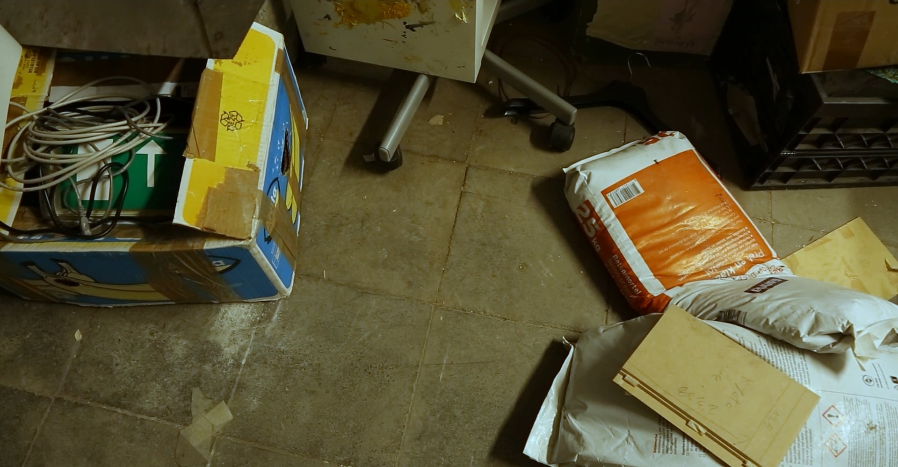
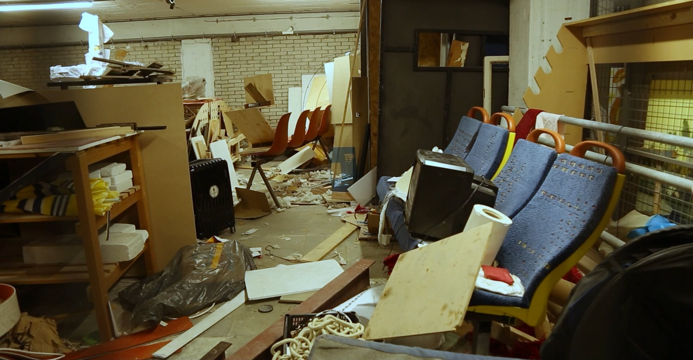
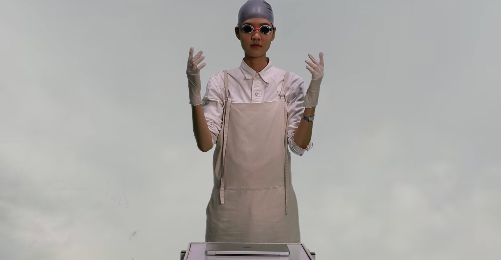

Direction Olivia Huynh
Actress Jaehyun Kim
Music Fade to Grey Visage
Canon EOS
A story about a researcher from the distant future who discovers a relic from the 21st century.
This short film was premiered at the Eye Filmmuseam in the program 'Cyberpunk' on February 8th, 2025.
Video
5:48min | Cyberpunk
Amsterdam, Netherlands · February 2025